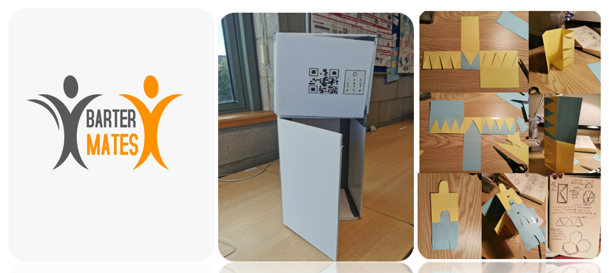

Design Intervention - BARTER MATES
Barter Mates is a design intervention for students who are looking for non-monetary solutions to comfortable living while building community and giving back. While there is already a multitude of financial aid technologies at hand, it seems difficult to engage these in everyday life. It is the lack of money that is the primary issue from our point of view as well as the ongoing management of it. The stresses of dealing with finance can lead to highly unpleasurable experiences. It is for this reason we would like to re-imagine the student finance experience. As a group, we connected over these issues of finance and stress. We also talked about finding community in a new setting and the idea of sharing the burden. This led to the question ‘What can we do as a student community to ease the pressure of financing daily life?’. As money is the limited resource in the equation, we looked at how to 05 to answer this question without it. Historically, bartering is the oldest form of commerce, a way of surviving in the world before hard currency even existed. This form of commerce has an underlying base concept of negotiation to determine the value of goods owned by two individuals and an agreement to offer these goods to one another in a fair swap or exchange. Bartering can also be looked at as a process of community building. It is a conversation starter and has the potential to lead to bonding between swappers as they can relay the enjoyment of their new goods to one another and to their peers, even perhaps encouraging further swapping. It is also a way to re-imagine our mass consumption economy on a small scale and promote a more sustainable and circular method to acquiring new goods while also extending their life-cycle. Barter Mates proposes to use this age-old commerce technique by creating a modular locker storage unit that is connected to an application by which users can negotiate an agreement to exchange goods, books, clothes or electronic devices for example. As we are concentrating on the student population for this intervention, we thought an application was an achievable way to generate uptake in the concept. The physical locker element works as a safety feature for those who may not want to swap in person while also working as a visible marketing tool in the community. The lockers will be connected to the application and numerical codes will be generated for the user to access the locker. The student user can upload their unwanted goods to the application and give a brief description on the item and then browse other goods to swap. A further element of our concept is the ‘organiser’ role, where users can plan an event for a group swap or meet-up. This function is to aid in the community building aspect. To further this idea, there will be a ‘goodwill’ or ‘open’ door section on the physical locker unit. This door can be used to gift items without a swap which can be then claimed on the application.
Goal Of Work :
Work as a team to create an interactive prototype with in-depth understanding of user-centric design. By applying the interaction and experience design theory to practical work. According to the design process, we would be more efficient and transparent when designing the product. In this project, it helps us to understand how to creatively explore and produce prototype project for early evaluation with users.